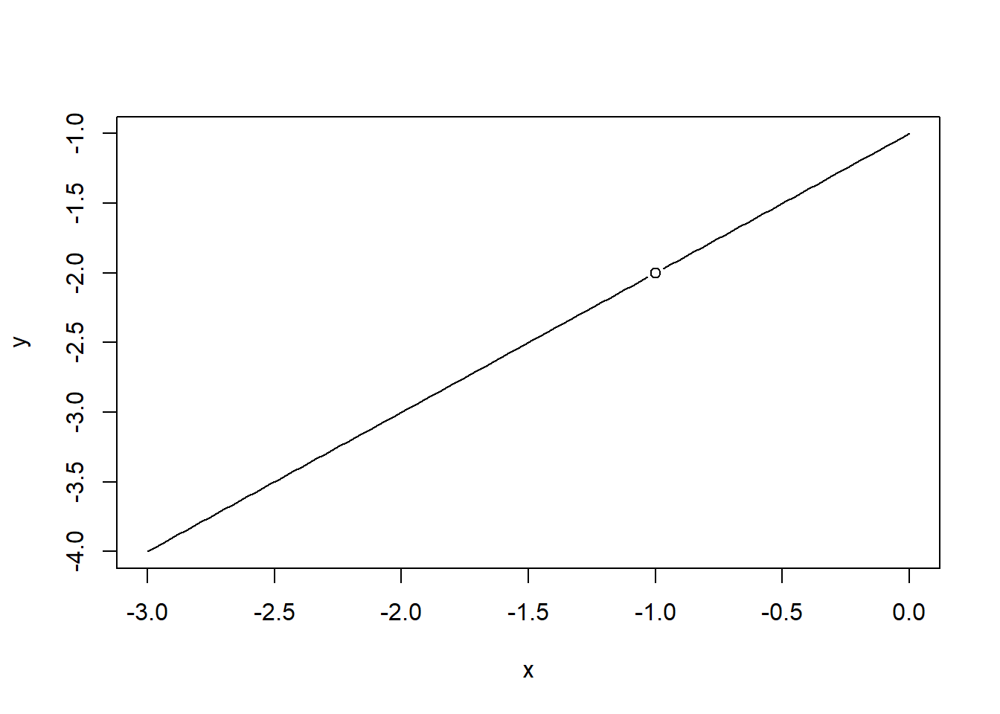

x <- seq(0, 3, l = 100)
fx <- function(x) {
sqrt(x)
}
y <- fx(x = x)
plot(y ~ x, type = "l")5 Cálculo Diferencial e Integral para Cientista de Dados
5.1 Funções, limites e continuidade
Os objetivos deste tutorial são:
- Ganhar experiência com a interpretação de equações matemáticas.
- Praticar a implementação computacional de funções matemáticas.
- Desenhar e interpretar o gráfico de funções uni e bidimensionais.
- Revisar e ilustrar computacionalmente propriedades de funções do tipo potência, exponencial e logarítmos.
5.1.1 Implementação de funções e seus gráficos
Para os exercícios abaixo use a função plot() com a opção type = "l" para desenhar o gráfico das funções. Lembre-se que computacionalmente você vai avaliar a função em um conjunto de pontos. Para criar esse conjunto de pontos use a função seq(a, b, l = tamanho) onde a e b são os limites inferior e superior do intervalo e l determina o número de pontos dentro do intervalo. Recomendo que para esses exercícios você use l = 100. Você pode consultar a minha solução clicando no botão Solution. Note que a minha solução é apenas uma sugestão. O importante é você desenvolver a habilidade de traduzir uma equação matemática para o computador e desenhar o gráfico associado.
- Implemente a função \(f(x) = \sqrt{x}\) e desenhe seu gráfico no intervalo \((0,3)\).
- Implemente a função \(f(x) = \log(x)\) e desenhe seu gráfico no intervalo \((-5,5)\).
x <- seq(-5, 5, l = 100)
fx <- function(x) {
log(x)
}
y <- fx(x = x)Warning in log(x): NaNs produzidosplot(y ~ x, type = "l")
Hint:
Note que o domínio da função \(\log\) é apenas os reais positivos. Assim, a parte negativa não faz sentido para este gráfico.
- Implemente a função \(\log_{10}(x)\) e desenhe seu gráfico no intervalo \((0,5)\).
x <- seq(0, 5, l = 100)
fx <- function(x) {
log10(x)
}
y <- fx(x = x)
plot(y ~ x, type = "l")
- Implemente a função \(\exp(x)\) e desenhe seu gráfico no intervalo \((0,1)\).
x <- seq(0, 1, l = 100)
fx <- function(x) {
exp(x)
}
y <- fx(x = x)
plot(y ~ x, type = "l")- Implemente a função \(\Gamma(x)\) e desenhe seu gráfico no intervalo \((0.5, 3)\).
x <- seq(0.5, 3, l = 100)
fx <- function(x) {
gamma(x)
}
y <- fx(x = x)
plot(y ~ x, type = "l")- Implemente a função \(f(x) = \frac{1}{x}\) e desenhe seu gráfico no intervalo \((-1, 1)\).
x1 <- seq(-1, 0, l = 50)
x2 <- seq(0, 1, l = 50)
fx <- function(x) {
1/x
}
y1 <- fx(x = x1)
y2 <- fx(x = x2)
plot(c(y1, y2) ~ c(x1, x2), type = "l")
Hint:
Note que neste exercício o ideal é dividir o domínio de \(f(x)\) em duas partes, uma vez que a função é descontinua em \(x = 0\). Avalie a função no ponto \(x = 0\) para ver o que o R retorna.
- Implemente a função \(f(x) = |x - 1| + 2\) e desenhe seu gráfico no intervalo \((-5, 5)\).
x <- seq(-5, 5, l = 100)
fx <- function(x) {
abs(x - 1) + 2
}
y <- fx(x = x)
plot(y ~ x, type = "l")- Implemente a função \(f(x) = \mathrm{beta}(x, 0.5)\) e desenhe seu gráfico no intervalo \((0, 1)\).
x <- seq(0, 1, l = 100)
fx <- function(x) {
beta(a = x, b = 0.5)
}
y <- fx(x = x)
plot(y ~ x, type = "l")
Hint:
Veja a documentão da função beta ?beta.
- Implemente a função \(f(x) = (x-1)^3\) e desenhe seu gráfico no intervalo \((-3, 5)\).
x <- seq(-3, 5, l = 100)
fx <- function(x) {
(x - 1)^3
}
y <- fx(x = x)
plot(y ~ x, type = "l")- Implemente a função \(f(x) = \frac{(x+1)}{x}\) e desenhe seu gráfico no intervalo \((-3, 3)\).
x1 <- seq(-3, 0, l = 100)
x2 <- seq(0, 3, l = 100)
fx <- function(x) {
(x+1)/x
}
y1 <- fx(x = x1)
y2 <- fx(x = x2)
plot(c(y1, y2) ~ c(x1, x2), type = "l")
Hint:
Note novamente a descontinuidade de \(f(x)\) no ponto \(x = 0\).
5.1.2 Funções parametrizadas
Para os exercícios abaixo você deve fazer o gráfico como uma função de \(x\) com o parâmetro \(\theta\) fixado. Tenha cuidado tanto com o domínio de \(f(x)\) quanto com o espaço paramétrico de \(\theta\), ou seja, o conjunto de valores que \(\theta\) pode assumir. Para entender como o parâmetro controla a curva você deve desenhar o gráfico usando diversos valores para \(\theta\).
5.1.2.1 Considere a função \(f(x; \theta) = \left( x \log \frac{x}{\theta} - x + \theta\right)\).
- Implemente a função e desenhe seu gráfico com \(\theta = 10\).
x <- seq(0, 20, l = 100)
fx <- function(x, theta) {
out <- x*log(x/theta) - x + theta
return(out)
}
y <- fx(x = x, theta = 10)
plot(y ~ x, type = "l")- Qual é o domínio de \(f(x)\)?
- Reais
- Intervalo (0,1)
- Reais estritamente positivos
- Naturais
- Qual é o espaço paramétrico de \(\theta\)?
- Reais
- Intervalo (0,1)
- Reais estritamente positivos
- Inteiros positivos
- Sobre o comportamento do gráfico de \(f(x)\) marque a alternativa correta.
- O parâmetro indica o ponto de minimo relativo e a curva é côncava para baixo.
- O parâmetro indica o ponto de máximo relativo e a curva é côncava para baixo.
- O parâmetro indica o ponto de minimo relativo e a curva é côncava para cima.
- O parâmetro indica o ponto de máximo relativo e a curva é côncava para cima.
5.1.2.2 Considere a função \(f(x; \theta) = \binom{100}{x} \exp \left\{x \log \frac{\theta}{1-\theta} +100 \log(1 - \theta) \right\}\).
- Implemente a função e desenhe seu gráfico considerando \(\theta = 0.40\).
x <- 0:100
fx <- function(x, theta) {
out <- choose(n = 100, k = x) * exp(x * log(theta/(1-theta)) + 100*log(1- theta))
return(out)
}
y <- fx(x = x, theta = 0.4)
barplot(y ~ x)- Qual é o domínio de \(f(x)\)?
- Reais
- Intervalo (0,1)
- Inteiros (0, 100)
- Inteiros de [0, 100]
- Qual é o espaço paramétrico de \(\theta\)?
- Reais ✗
- Intervalo (0,1) ✓
- Reais estritamente positivos ✗
- Reais estritamente negativo ✗
- Sobre o comportamento do gráfico de \(f(x)\) marque a alternativa correta.
- O parâmetro indica o ponto de minimo relativo e a curva é côncava para baixo. ✗
- O parâmetro indica o ponto de máximo relativo e a curva é côncava para baixo. ✓
- O parâmetro indica o ponto de minimo relativo e a curva é côncava para cima. ✗
- O parâmetro indica o ponto de máximo relativo e a curva é côncava para cima. ✗
5.1.2.3 Considere a função \(f(x; \theta) = \sum_{i=1}^n \left( \frac{x_i}{\theta} -\log \left\{ \frac{x_i}{\theta} \right \} -1 \right )\).
- Implemente a função e desenhe seu gráfico considerando \(\theta = 10\).
fx <- function(x, theta) {
out <- (x/theta) - log(x/theta) - 1
return(out)
}
x <- seq(5, 15, l = 100)
y <- fx(x = x, theta = 10)
plot(y ~ x, type = "l")- Qual é o domínio de \(f(x)\)?
- Reais ✗
- Intervalo (0,1) ✗
- Reais estritamente positivos ✓
- Intervalo (0,2π] ✗
- Qual é o espaço paramétrico de \(\theta\)?
- Reais ✗
- Intervalo (0,1) ✗
- Reais estritamente positivos ✓
- Intervalo (0,2π] ✗
- Sobre o comportamento do gráfico de \(f(x)\) marque a alternativa correta.
- O parâmetro indica o ponto de minimo relativo e a curva é côncava para baixo.
- O parâmetro indica o ponto de máximo relativo e a curva é côncava para baixo.
- O parâmetro indica o ponto de minimo relativo e a curva é côncava para cima.
- O parâmetro indica o ponto de máximo relativo e a curva é côncava para cima.
5.1.2.4 Considere a função \(f(x; \theta) = (1 - \cos(x - \theta))\).
- Implemente a função e desenhe seu gráfico considerando \(\theta = 2\).
fx <- function(x, theta) {
out <- (1 - cos(x - theta))
return(out)
}
x <- seq(0, 2*pi, l = 100)
y <- fx(x = x, theta = 2)
plot(y ~ x, type = "l")- Entre as opções abaixo para o domínio de \(f(x)\) qual garante que \(f(x)\) tenha apenas um mínimo relativo?
- Reais ✗
- Inteiros ✗
- Reais estritamente positivos ✗
- Intervalo (0,2π] ✓
- Considerando b) qual é o espaço paramétrico de \(\theta\)?
- Reais ✗
- Intervalo (0,1) ✗
- Reais estritamente positivos ✗
- Intervalo (0,2π] ✓
- Sobre o comportamento do gráfico de \(f(x)\) marque a alternativa correta.
- O parâmetro indica o ponto de minimo relativo e a curva é côncava para baixo. ✗
- O parâmetro indica o ponto de máximo relativo e a curva é côncava para baixo. ✗
- O parâmetro indica o ponto de minimo relativo e a curva é côncava para cima. ✓
- O parâmetro indica o ponto de máximo relativo e a curva é côncava para cima. ✗
5.1.2.5 Considere a função \(f(x; \theta, p) = 2\left \{ \frac{x^{(2-p)}}{(1-p)(2-p)} - \frac{x \theta^{(1-p)}}{1-p} + \frac{\theta^{(2-p)}}{2-p} \right \}\).
- Implemente a função e desenhe seu gráfico considerando \(\theta = 5\) e \(p = 1.5\).
fx <- function(x, theta, p) {
term1 <- ( x^(2-p) )/( (1-p)*(2-p) )
term2 <- (x*(theta^(1-p)))/(1-p)
term3 <- (theta^(2-p))/(2-p)
out <- 2*(term1 - term2 + term3)
return(out)
}
x <- seq(0, 20, l = 100)
y <- fx(x = x, theta = 5, p = 1.5)
plot(y ~ x, type = "l")- Qual é o domínio de \(f(x)\)?
- Reais ✗
- Inteiros ✗
- Reais estritamente positivos ✓
- Intervalo (0,2π]. ✗
- Qual o espaço paramétrico de \(\theta\) e \(p\)?
- \(\theta\) é real e \(p\) é estritamente positivo. ✗
- Intervalo (0,1) para ambos ✗
- \(\theta\) é real e \(p \in (1,2)\). ✗
- \(\theta\) é real estritamente positivo e \(p \in (1,2)\) ✓
- Sobre o comportamento do gráfico de \(f(x)\) marque a alternativa correta.
- O parâmetro \(\theta\) indica o ponto de minimo relativo e a curva é côncava para baixo. ✗
- O parâmetro \(\theta\) indica o ponto de máximo relativo e a curva é côncava para baixo. ✗
- O parâmetro \(\theta\) indica o ponto de minimo relativo e a curva é côncava para cima. ✓
- O parâmetro \(\theta\) indica o ponto de máximo relativo e a curva é côncava para cima. ✗
5.1.3 Limites
5.1.3.1 Considere a seguinte função \(f(x) = \sqrt{x} + x\).
- Esboce o gráfico e marque o ponto \(x = 0\).
x <- seq(0, 2, l = 100)
fx <- function(x) {
out <- sqrt(x) + x
return(out)
}
y <- fx(x = x)
plot(y ~ x, type = "l")
points(x = 0, y = fx(x = 0), pch = 18)- Calcule \(\lim_{x \to 0 } ( \sqrt{x} + x)\).
- -2 ✗
- 4 ✗
- 0 ✓
- 6/5 ✗
- 1 ✗
5.1.3.2 Considere a seguinte função \(f(x) = \frac{x^2 + x}{ x + 3}\).
- Esboce o gráfico e marque o ponto \(x = 2\).
x <- seq(0, 4, l = 100)
fx <- function(x) {
out <- (x^2 + x)/(x + 3)
return(out)
}
y <- fx(x = x)
plot(y ~ x, type = "l")
points(x = 2, y = fx(x = 2), pch = 18)- Calcule \(\lim_{x \to 2 } \frac{x^2 + x}{ x + 3}\).
- 6/5 ✓
- 4 ✗
- -2 ✗
- 1 ✗
- 6 ✗
5.1.3.3 Considere a seguinte função \(f(x) = \frac{x^2 - 4}{x-2}\).
- Esboce o gráfico e marque o ponto \(x = 2\).
x <- c(seq(1, 2, l = 50), 2, seq(2, 3, l = 50))
fx <- function(x) {
out <- (x^2 - 4)/(x - 2)
return(out)
}
y <- fx(x = x)
plot(y ~ x, type = "l")
points(x = 2, y = 4, pch = 1)- Calcule \(\lim_{x \to 2 } \frac{x^2 - 4}{x - 2}\).
- -2 ✗
- 4 ✓
- 0 ✗
- 6/5 ✗
- 1 ✗
5.1.3.4 Considere a seguinte função \(f(x) = \frac{x^2 - 1}{x + 1}\).
- Esboce o gráfico e marque o ponto \(x = -1\).
x <- seq(-3, 0, l = 100)
fx <- function(x) {
out <- (x^2 - 1)/(x + 1)
return(out)
}
y <- fx(x = x)
plot(y ~ x, type = "l")
points(x = -1, y = -2, pch = 1)
- Calcule \(\lim_{x \to -1 } \frac{x^2 - 1}{x + 1}\).
- -2 ✗
- 4 ✓
- 0 ✗
- 6/5 ✗
- 1 ✗
5.1.3.5 Considere a seguinte função \(f(x) = \sin(x)\).
- Esboce o gráfico e marque o ponto \(x = 0\).
x <- seq(-3, 3, l = 100)
fx <- function(x) {
out <- sin(x)
return(out)
}
y <- fx(x = x)
plot(y ~ x, type = "l")
points(x = 0, y = fx(x = 0), pch = 18)- Calcule \(\lim_{x \to 0 } \sin(x)\).
- -2 ✗
- 4 ✗
- 0 ✓
- 6/5 ✗
- 1 ✗
5.1.4 Continuidade
Considere as seguintes funções:
- \(f(x) = \sqrt{x}\) em \(x = 0\).
- \(f(x) = \frac{x^2 - 4}{x-2}\) em \(x = 2\).
- \(f(x) = \left\{\begin{matrix} x \quad \text{se} \quad x < 1 \\ \frac{1}{x} \quad \text{se} \quad x > 1 \quad \text{em} \quad x = 1 \end{matrix}\right.\)
- \(f(x) = \Gamma(x)\) em \(x = 2\).
- \(f(x) = \frac{|x-2|}{x-2}\) em \(x = 2\).
Usando a definição intuitiva de limite marque a alternativa correta
- a), b) e d) são contínuas. ✗
- e), b) e a) são contínuas. ✗
- b), c) e e) são não contínuas ✓
- b), c) e d) são não contínuas ✗
- Apenas d) é não contínua. ✗
5.1.5 Funções especiais
Ilustre computacionalmente cada uma das seguintes propriedades das funções do tipo potência.
- \(x^a (x^c) = x^{a+c}\);
- \((x^a)^c = x^{ac}\);
- \((xz)^a = x^a (z^a)\);
- \(\left ( \frac{x}{z} \right )^c = \frac{x^c}{z^c}\);
- \(\frac{1}{x^a} = x^{-a}\);
- \(\frac{x^a}{x^c} = x^{a-c}\);
- \(\sqrt{x} = x^{1/2}\);
x <- 5
z <- 3
a <- 2
c <- 4
all.equal((x^a)*(x^c),x^(a+c))[1] TRUEall.equal((x^a)^c, x^(a*c))[1] TRUEall.equal((x*z)^a, (x^a) * (z^a))[1] TRUEall.equal(((x/z)^c), ((x^c)/(z^c)))[1] TRUEall.equal(1/(x^a) , x^(-a))[1] TRUEall.equal((x^a)/(x^c), x^(a-c))[1] TRUEall.equal(sqrt(x), x^0.5)[1] TRUE5.2 Derivadas
Os objetivos deste tutorial são:
- Derivar funções triviais.
- Obter a equação da reta tangente a uma função.
- Cálculo de derivadas usando a regra da cadeia.
- Aproximar funções usando a expansão em séries de Taylor.
5.2.1 Derivadas triviais
Para cada uma das funções abaixo obtenha a sua derivada, implemente uma função chamada dx() que calcula a derivada obtida no ponto \(x = 1/2\) e retorna o seu valor. Para usar a correção automática a linha final do seu código deve ser dx(x = 1/2).
- \(f(x) = x^4\).
dx <- function(x) {4*x^3}
dx(x = 1/2)[1] 0.5- \(f(x) = x^{-3}\).
dx <- function(x) {-3/(x^4)}
dx(x = 1/2)[1] -48- \(f(x) = \sqrt[3]{x}\).
dx <- function(x) {(1/3)*(x^(2/3))}
dx(x = 1/2)[1] 0.2099868- \(f(x) = \frac{1}{x}\).
dx <- function(x) {-1/(x^2)}
dx(x = 1/2)[1] -4- \(f(x) = \sqrt[8]{x^2}\).
dx <- function(x) {1/(4* x^(3/4))}
dx(x = 1/2)[1] 0.4204482- \(f(x) = 4x^3 + x^2\).
dx <- function(x) {12*x^2 + 2*x}
dx(x = 1/2)[1] 4- \(f(x) = \frac{2x + 3}{x^2 + 1}\).
dx <- function(x) {
p1 <- 2/(x^2 + 1)
p2 <- (2*x*(2*x + 3))/(x^2 + 1)
return(p1 - p2)
}
dx(x = 1/2)[1] -1.6- \(f(x) = (3x^2 + 1) \exp(x)\).
dx <- function(x) {
out <- (3*x^2 + 1)*exp(x) + 6*x*exp(x)
return(out)
}
dx(x = 1/2)[1] 7.831426- \(f(x) = 5x^4 + 6x^3 + x^2 + 2\).
dx <- function(x) {
out <- 20*x^3 + 18*x^2 + 2*x
return(out)
}
dx(x = 1/2)[1] 8- \(f(x) = \log(x) 3x^4\).
dx <- function(x) {
out <- 12*x^3 * log(x) + 3*x^3
return(out)
}
dx(x = 1/2)[1] -0.66472085.2.2 Reta tangente
Para cada uma das funções abaixo obtenha a reta tangente a \(f(x)\) e esboce o gráfico. Para usar a correção aumotmática a última linha do seu código deve retornar o intercepto e a inclinação da reta tangente da seguinte forma resultado = c(intercepto, inclinacao).
- \(f(x) = \frac{1}{x}\) em \(x = 2\).
# Função
fx <- function(x) {
1/x
}
# Derivada da função
dx <- function(x) {
-1/x^2
}
# Reta tangente
reta_tangente <- function(a) {
intercept = (fx(x = a) - dx(x = a)*a)
slope <- dx(x = a)
return(c(intercept,slope))
}
# Gráfico da função
x <- seq(1, 3, l = 100) ## Sequencia definindo o eixo x
plot(fx(x) ~ x, type = "l") ## Desenhando a função
## Reta tangente ao ponto a = 2
reta1 <- reta_tangente(a = 2)
intercepto = reta1[1]
inclinacao <- reta1[2]
lines(x, c(intercepto + inclinacao*x))
resultado <- c(intercepto, inclinacao)- \(f(x) = x^3\) em \(x = 3\).
# Função
fx <- function(x) {
x^3
}
# Derivada da função
dx <- function(x) {
3*x^2
}
# Reta tangente
reta_tangente <- function(a) {
intercept = (fx(x = a) - dx(x = a)*a)
slope <- dx(x = a)
return(c(intercept,slope))
}
# Gráfico da função
x <- seq(1, 5, l = 100) ## Sequencia definindo o eixo x
plot(fx(x) ~ x, type = "l") ## Desenhando a função
## Reta tangente ao ponto a = 2
reta1 <- reta_tangente(a = 3)
intercepto = reta1[1]
inclinacao <- reta1[2]
lines(x, c(intercepto + inclinacao*x))resultado <- c(intercepto, inclinacao)- \(f(x) = \exp(x)\) em \(x = 0\).
# Função
fx <- function(x) {
exp(x)
}
# Derivada da função
dx <- function(x) {
exp(x)
}
# Reta tangente
reta_tangente <- function(a) {
intercept = (fx(x = a) - dx(x = a)*a)
slope <- dx(x = a)
return(c(intercept,slope))
}
# Gráfico da função
x <- seq(-3, 2, l = 100) ## Sequencia definindo o eixo x
plot(fx(x) ~ x, type = "l") ## Desenhando a função
## Reta tangente ao ponto a = 2
reta1 <- reta_tangente(a = 0)
intercepto = reta1[1]
inclinacao <- reta1[2]
lines(x, c(intercepto + inclinacao*x))resultado <- c(intercepto, inclinacao)- \(f(x) = \log(x)\) em \(x = 2\).
# Função
fx <- function(x) {
log(x)
}
# Derivada da função
dx <- function(x) {
1/x
}
# Reta tangente
reta_tangente <- function(a) {
intercept = (fx(x = a) - dx(x = a)*a)
slope <- dx(x = a)
return(c(intercept,slope))
}
# Gráfico da função
x <- seq(0.5, 4, l = 100) ## Sequencia definindo o eixo x
plot(fx(x) ~ x, type = "l") ## Desenhando a função
## Reta tangente ao ponto a = 2
reta1 <- reta_tangente(a = 2)
intercepto = reta1[1]
inclinacao <- reta1[2]
lines(x, c(intercepto + inclinacao*x))resultado <- c(intercepto, inclinacao)5.2.3 Regra da cadeia
Para cada uma das funções abaixo obtenha a sua derivada, implemente uma função chamada dx() que calcula a derivada obtida no ponto \(x = 2\) e retorna o seu valor. Para usar a correção automática a linha final do seu código deve ser dx(x = 2).
- \(f(x) = \exp{3x}\).
dx <- function(x) {3*exp(3*x)}
dx(x = 2)[1] 1210.286- \(f(x) = \sin(x^2)\).
dx <- function(x) {2*x*cos(x^2)}
dx(x = 2)[1] -2.614574- \(f(x) = (3x^2 + 1)^3\).
dx <- function(x) {18*x*(3*x^2 + 1)^2}
dx(x = 2)[1] 6084- \(f(x) = \log(x^2 + 3)\).
dx <- function(x) {2*x/(x^2 + 3)}
dx(x = 2)[1] 0.5714286- \(f(x) = x^2 \exp(3x)\).
dx <- function(x) {3*(x^2)*exp(3*x) + 2*x*exp(3*x)}
dx(x = 2)[1] 6454.861- \(f(x) = \log(x^2 + 3x + 9)\).
dx <- function(x) {(2*x + 3)/(x^2 + 3*x + 9)}
dx(x = 2)[1] 0.3684211- \(f(x) = \sqrt{x + \exp(x)}\).
dx <- function(x) {(exp(x) + 1)/(2*sqrt(exp(x) + x))}
dx(x = 2)[1] 1.3689015.2.4 Aproximação por Série de Taylor
Aproxime as seguintes funções usando a expansão de Taylor de segunda ordem. Esboce o gráfico da função e da aproximação. Note que \(y_i\) é constante nos valores informados e que a aproximação deve ser feita em relação a \(\mu\). Pode fixar como ponto de referência para a aproximação \(\mu_0\) a média dos \(y_i\)’s. Para usar a correção automática você deve avaliar a aproximação de Taylor em cada valor de \(y_i\) fornecido.
- \(f(\mu; \boldsymbol{y}) = \sum_{i=1}^n (y_i - \mu)^2\). Fixe \(y_i = 2.09;-1.32;-0.20;0.05;-0.07\).
# Função genérica
taylor_ap <- function(mu, mu0, f, f_prime, f_dprime) {
app <- f(mu = mu0) + (mu - mu0)*f_prime(mu = mu0) +
(((mu - mu0)^2)/(2))*f_dprime(mu = mu0)
return(app)
}
# Dados do exercício
y <- c(2.09, -1.32, -0.20, 0.05, -0.07)
# Ponto referencia da aproximação
mu0 <- mean(y)
# Função a ser aproximada
f <- function(mu) {sum( (y - mu)^2) }
f <- Vectorize(FUN = f, vectorize.args = "mu")
# Primeira derivada da função a ser aproximada
f_prime <- function(mu) {-2*sum(y-mu)}
f_prime <- Vectorize(FUN = f_prime, vectorize.args = "mu")
# Segunda derivada da função a ser aproximada
f_dprime <- function(mu) {2*length(y)}
f_dprime <- Vectorize(FUN = f_dprime, vectorize.args = "mu")
# Grafico da aproximação
plot(f, min(y), max(y), ylab = expression(f(mu)), xlab = expression(mu))
xx <- seq(min(y), max(y), l = 100)
lines(xx, taylor_ap(mu = xx, mu0 = mu0, f = f, f_prime = f_prime,
f_dprime = f_dprime), col = "red", lty = 2, lwd = 2)
legend("topleft", legend = c("True","Taylor Aprx."), lty = c(1,2), lwd = c(1, 2), col = c(1,2))taylor_ap(mu = y, mu0 = mean(y), f = f, f_prime = f_prime, f_dprime = f_dprime)[1] 25.6994 16.3219 6.5779 6.1154 6.2594- \(f(\mu; \boldsymbol{y}) = \sum_{i=1}^n 2 \left ( y_i \log \frac{y_i}{\mu} + \mu - y_i \right )\). Fixe \(y_i = 7;4;4;6;5\).
# Função genérica
taylor_ap <- function(mu, mu0, f, f_prime, f_dprime) {
app <- f(mu = mu0) + (mu - mu0)*f_prime(mu = mu0) +
(((mu - mu0)^2)/(2))*f_dprime(mu = mu0)
return(app)
}
# Dados do exercício
y <- c(7, 4, 4, 6, 5)
# Ponto referencia da aproximação
mu0 <- mean(y)
# Função a ser aproximada
f <- function(mu) {sum(2*(y*log(y/mu) + mu - y) )}
f <- Vectorize(FUN = f, vectorize.args = "mu")
# Primeira derivada da função a ser aproximada
f_prime <- function(mu) {sum(2*(1 - y/mu))}
f_prime <- Vectorize(FUN = f_prime, vectorize.args = "mu")
# Segunda derivada da função a ser aproximada
f_dprime <- function(mu) {sum(2*y/mu^2)}
f_dprime <- Vectorize(FUN = f_dprime, vectorize.args = "mu")
# Grafico da aproximação
plot(f, min(y), max(y), ylab = expression(f(mu)), xlab = expression(mu))
xx <- seq(min(y), max(y), l = 100)
lines(xx, taylor_ap(mu = xx, mu0 = mu0, f = f, f_prime = f_prime,
f_dprime = f_dprime), col = "red", lty = 2, lwd = 2)
legend("topleft", legend = c("True","Taylor Aprx."), lty = c(1,2), lwd = c(1, 2), col = c(1,2))taylor_ap(mu = y, mu0 = mean(y), f = f, f_prime = f_prime, f_dprime = f_dprime)[1] 4.404081 2.673311 2.673311 1.904081 1.327158- \(f(\mu; \boldsymbol{y}) = \sum_{i=1}^n 2 \left ( \frac{y_i}{\mu} - \log \frac{y_i}{\mu} - 1 \right )\). Fixe \(y_i = 2.35;0.16;0.56;1.05;0.51\).
# Função genérica
taylor_ap <- function(mu, mu0, f, f_prime, f_dprime) {
app <- f(mu = mu0) + (mu - mu0)*f_prime(mu = mu0) +
(((mu - mu0)^2)/(2))*f_dprime(mu = mu0)
return(app)
}
# Dados do exercício
y <- c(2.35, 0.16, 0.56, 1.05, 0.51)
# Ponto referencia da aproximação
mu0 <- mean(y)
# Função a ser aproximada
f <- function(mu) {sum(2*((y/mu) - log(y/mu) -1 ))}
f <- Vectorize(FUN = f, vectorize.args = "mu")
# Primeira derivada da função a ser aproximada
f_prime <- function(mu) {sum( 2*( (1/mu) - y/(mu^2) ))}
f_prime <- Vectorize(FUN = f_prime, vectorize.args = "mu")
# Segunda derivada da função a ser aproximada
f_dprime <- function(mu) {sum( 2*( (2*y/mu^3) - 1/(mu^2)))}
f_dprime <- Vectorize(FUN = f_dprime, vectorize.args = "mu")
# Grafico da aproximação
plot(f, min(y), max(y), ylab = expression(f(mu)), xlab = expression(mu))
xx <- seq(min(y), max(y), l = 100)
lines(xx, taylor_ap(mu = xx, mu0 = mu0, f = f, f_prime = f_prime,
f_dprime = f_dprime), col = "red", lty = 2, lwd = 2)
legend("topleft", legend = c("True","Taylor Aprx."), lty = c(1,2), lwd = c(1, 2), col = c(1,2))taylor_ap(mu = y, mu0 = mean(y), f = f, f_prime = f_prime, f_dprime = f_dprime)[1] 15.420365 7.017681 4.377374 3.685926 4.605369- \(f(\mu; \boldsymbol{y}) = \sum_{i=1}^n 2 \left ( y_i \log \frac{y_i}{\mu} + (1- y_i) \log \frac{1-y_i}{1-\mu} \right )\). Fixe \(y_i = 1;0;0;1;1\).
# Função genérica
taylor_ap <- function(mu, mu0, f, f_prime, f_dprime) {
app <- f(mu = mu0) + (mu - mu0)*f_prime(mu = mu0) +
(((mu - mu0)^2)/(2))*f_dprime(mu = mu0)
return(app)
}
# Dados do exercício
y <- c(1,0,0,1,1)
# Ponto referencia da aproximação
mu0 <- mean(y)
# Função a ser aproximada
f <- function(mu) {
temp <- c()
for(i in 1:length(y)) {
if(y[i] == 1) { temp[i] <- y[i]*log(y[i]/mu) }
if(y[i] == 0) { temp[i] <- (1-y[i])*log( (1-y[i])/(1-mu) ) }
}
return(sum(2*temp))
}
f <- Vectorize(FUN = f, vectorize.args = "mu")
# Primeira derivada da função a ser aproximada
f_prime <- function(mu) {sum(2*((1-y)/(1-mu) - y/mu ))}
f_prime <- Vectorize(FUN = f_prime, vectorize.args = "mu")
# Segunda derivada da função a ser aproximada
f_dprime <- function(mu) {sum(2*( (y/mu^2) + (1-y)/(1-mu)^2))}
f_dprime <- Vectorize(FUN = f_dprime, vectorize.args = "mu")
# Grafico da aproximação
plot(f, 0.1, 0.9, ylab = expression(f(mu)), xlab = expression(mu))
xx <- seq(0.1, 0.9, l = 100)
lines(xx, taylor_ap(mu = xx, mu0 = mu0, f = f, f_prime = f_prime,
f_dprime = f_dprime), col = "red", lty = 2, lwd = 2)
legend("topleft", legend = c("True","Taylor Aprx."), lty = c(1,2), lwd = c(1, 2), col = c(1,2))taylor_ap(mu = y, mu0 = mean(y), f = f, f_prime = f_prime, f_dprime = f_dprime)[1] 10.06345 14.23012 14.23012 10.06345 10.06345- $f(; ) = _{i=1}^n 2 ( y_i + (m + y_i) ) $. Fixe \(m = 10\) e \(y_i = 7;4;4;6;5\).
# Função genérica
taylor_ap <- function(mu, mu0, f, f_prime, f_dprime) {
app <- f(mu = mu0) + (mu - mu0)*f_prime(mu = mu0) +
(((mu - mu0)^2)/(2))*f_dprime(mu = mu0)
return(app)
}
# Dados do exercício
y <- c(7,4,4,6,5)
# Ponto referencia da aproximação
mu0 <- mean(y)
# Função a ser aproximada
f <- function(mu) {sum (2*( y*log(y/mu) + (10 + y)* log( (10+mu)/(10 + y) ))) }
f <- Vectorize(FUN = f, vectorize.args = "mu")
# Primeira derivada da função a ser aproximada
f_prime <- function(mu) {sum(2*( (y+10)/(mu+10) - y/mu ))}
f_prime <- Vectorize(FUN = f_prime, vectorize.args = "mu")
# Segunda derivada da função a ser aproximada
f_dprime <- function(mu) {sum((y/mu^2) - (y + 10)/(mu + 10)^2)}
f_dprime <- Vectorize(FUN = f_dprime, vectorize.args = "mu")
# Grafico da aproximação
plot(f, 1, 9, ylab = expression(f(mu)), xlab = expression(mu))
xx <- seq(1, 9, l = 100)
lines(xx, taylor_ap(mu = xx, mu0 = mu0, f = f, f_prime = f_prime,
f_dprime = f_dprime), col = "red", lty = 2, lwd = 2)
legend("topleft", legend = c("True","Taylor Aprx."), lty = c(1,2), lwd = c(1, 2), col = c(1,2))
taylor_ap(mu = y, mu0 = mean(y), f = f, f_prime = f_prime, f_dprime = f_dprime)[1] 1.8695894 1.3002574 1.3002574 1.0472210 0.85744365.3 Integrais
Os objetivos deste tutorial são:
- Obtenção de integrais indefinidas simples.
- Cálculo de área abaixo de curvas (integrais definidas)
- Uso de funções do
Rpara o cálculo de integrais.
5.3.1 Integrais indefinidas
Calcule cada uma das integrais abaixo e implemente uma função chamada integral() que calcula a integral obtida considerando a constante \(c = 0\) e retorna o seu valor. Para usar a correção automática a linha final do seu código deve ser integral(x = 2).
- \(\int x^3 dx\).
integral <- function(x) { (x^4)/4 }
integral(x = 2)[1] 4- \(\int \frac{1}{x^2} dx\).
integral <- function(x) { -1/x }
integral(x = 2)[1] -0.5- \(\int \frac{1}{x} + \sqrt{x} dx\).
integral <- function(x) { log(x) + (2*x^(3/2))/3 }
integral(x = 2)[1] 2.578765- \(\int \exp^{-x} dx\).
integral <- function(x) { -exp(-x) }
integral(x = 2)[1] -0.1353353- \(\int x + 3 \exp^{x} dx\).
integral <- function(x) {3*exp(x) + (x^2)/2}
integral(x = 2)[1] 24.167175.3.2 Integrais definidas
Obtenha as seguintes integrais definidas. Você pode obter a anti-derivada e avaliar a área ou usar a função integrate() do R. Para usar a correção automática a última linha do seu código deve ser area = valor ondelo valor é um valor (numérico).
- \(\int_{1}^2 x^2 dx\).
fx <- function(x) {x^2}
temporario <- integrate(f = fx, lower = 1, upper = 2)
area <- as.numeric(temporario$value)- \(\int_{0}^2 (x^3 + 3x -1) dx\).
fx <- function(x) {x^3 + 3*x - 1}
temporario <- integrate(f = fx, lower = 0, upper = 2)
area <- as.numeric(temporario$value)- \(\int_{-150}^{150} \exp \left\{ -\frac{(x - 5)^2}{2} \right \} dx\).
fx <- function(x) {exp( - ((x - 5)^2)/2 )}
temporario <- integrate(f = fx, lower = -150, upper = 150)
area <- as.numeric(temporario$value)- \(\int_{0}^{100} \exp \left\{ -\frac{|x - 5|}{2} \right \} dx\).
fx <- function(x) {exp(-abs(x - 5)/2 )}
temporario <- integrate(f = fx, lower = 0, upper = 150)
area <- as.numeric(temporario$value)- \(\int_{1}^{2} \left(\frac{1}{x} + \frac{1}{x^3} \right \} dx\).
fx <- function(x) {(1/x + 1/x^3)}
temporario <- integrate(f = fx, lower = 1, upper = 2)
area <- as.numeric(temporario$value)5.4 Desafios
Os próximos dois exercícios são desafios. Não apresento nenhuma solução a ideia é vocês tentarem resolver usando quaisquer meios. Isso inclue procurar soluções na internet, discutir com os colegas, postar em grupos etc. Se você chegar em uma solução que queira compartilhar comigo pode me mandar a solução por e-mail.
5.4.1 Redução de dados usando perda absoluta
5.4.1.1 Sejam \(y_i\) valores observados para \(i = 1, \ldots, n\). Considere a função perda absoluta dada por
\[f(\mu; \mathbf{y}) = \sum_{i=1}^n |y_i - \mu|.\]
- Simule um conjunto de valores adequado para \(y_i\).
- Esboce o gráfico da função perda para este conjunto de dados e diferentes valores de \(\mu\).
- Encontre o valor de \(\mu\) que minimiza a função perda absoluta.
- Discuta quando a função perda absoluta pode ser mais conveniente do que a função perda quadrática.
5.4.2 Regressão linear simples usando perda absoluta
Sejam \(y_i\) e \(x_i\) valores observados para \(i = 1, \ldots, n\). Considere o problema de ajustar um reta relacionando \(y_i\) com \(x_i\), usando a função perda absoluta
\[f(\beta_0, \beta_1) = \sum_{i=1}^n |y_i - (\beta_0 + \beta_1 x_i)|.\]
- Simule um conjunto de valores adequado para \(y_i\) fixado um vetor de \(x_i\).
- Esboce o gráfico da função perda para o conjunto de dados simulado.
- Encontre o valor de \(\beta_0\) e \(\beta_1\) que miniza a função perda absoluta.
- Discuta quando a função perda absoluta pode ser mais conveniente do que a função perda quadrática para o ajuste deste modelo.